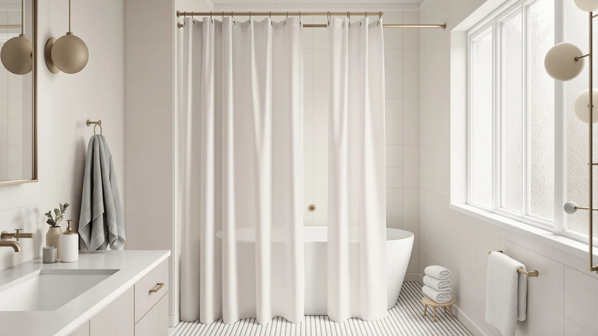

The Best Extra-wide Shower Curtains (2026)
Prices and picks verified as of August 2026. Independent, reader-supported reviews.


Quick Answer
The Madison Park Amherst is the best extra-wide shower curtain for most bathrooms. Its 72 by 72 inch microfiber panel covers more of a larger stall or clawfoot tub than a standard 70 inch curtain, and its price sits in the middle of the seven curtains we compared for width, material and verified owner ratings.
Our pick: Madison Park Amherst Bathroom Shower at $29.99 Check Price on Amazon
Bottom line: our top pick is the Madison Park Amherst Bathroom Shower Curtain Faux Silk Pieced at $29.99. The best budget option is the downluxe No Hook Shower Curtain with Snap in Liner at $17.99.
Things to Know Before You Buy
- 72 inches is the practical ceiling for a single panel. Every curtain in this guide tops out at 72 inches wide, a few inches past the 70 to 71 inch standard, so check your rod length before you buy.
- Material changes how the width behaves. Microfiber and cotton hold their shape and resist billowing better than lightweight polyester or PEVA at this size.
- A weighted or reinforced hem matters more on wide panels. The extra fabric surface area catches more airflow, so a plain hem is more likely to blow inward during a shower.
- Hookless designs save a step but limit hook choice. A few picks here use built-in rings, which speeds up installation but means you cannot swap in decorative hooks later.
- Pair the width with a matching liner. A standard-width liner will sit short of the edges on a 72 inch curtain and reduce splash protection.
Finding the best extra-wide shower curtains starts with a simple problem: a standard 70 inch panel leaves visible gaps at both ends of a larger stall, a clawfoot tub, or an angled shower opening. We compared seven curtains built at 71 to 74 inches, the widest sizes commonly sold on Amazon, and our pick, the Madison Park Amherst, pairs a full 72 inch microfiber panel with a weighted hem that keeps it from pulling away from the wall.
We narrowed this list by width first, then by material, hem construction, and what verified buyers say after living with each curtain. Microfiber and cotton panels hold their shape at this size better than thin polyester, and a weighted or reinforced hem matters more here than on a standard-width curtain because there is simply more fabric for airflow to catch. We also checked pricing and available reviews for every product so the picks reflect what buyers actually receive, not what a listing promises.
Below you will find our top pick, a runner-up, a budget option, and several also-great picks that suit different bathroom styles, from a lace overlay to a farmhouse print. Each entry includes the honest drawbacks alongside what works, a comparison table for a quick side-by-side, and a rundown of curtains we considered but left off this list.
Why You Should Trust Us
This guide was researched and written by Ilane Tall, home and bath expert at Best Shower Curtains. We do not run a fake testing lab or claim to have installed every curtain we cover. Instead, we compare manufacturer specs, current Amazon pricing, and verified owner reviews for each product, and we update our picks for the best extra-wide shower curtains as prices, availability, and buyer feedback change.
How We Picked
We started by filtering for curtains listed at 71 inches wide or more, since that is where a panel starts to outperform the 70 inch standard on a larger stall. From there, we prioritized curtains with a weighted, grommeted, or reinforced hem, since a wide panel without one is more prone to billowing. We also weighed material honesty: a listing that calls thin PEVA "premium fabric" gets less credit than one that states its material plainly. Finally, we cross-checked pricing against verified review counts so a curtain with a handful of reviews does not outrank one with a longer, more consistent track record.
How We Compared
We are a research-based review site, so we do not physically test or own the curtains we cover. Instead, we compared listed dimensions, fabric composition, hem construction, and current Amazon pricing side by side for all seven extra-wide shower curtains in this guide. We then read through verified owner reviews on each listing to see how the width and hem held up in day-to-day use, noting recurring complaints about billowing, sizing, or fabric thinness where they showed up across multiple reviewers rather than a single outlier.
Our Picks

Madison Park Amherst Bathroom Shower
What we like
- Full 72 by 72 inch microfiber panel covers more of a wide stall than a standard curtain
- Microfiber fabric holds its shape better than thin polyester at this width
- Priced in the middle of the group despite the larger size
Flaws but not dealbreakers
- Costs more than the budget picks on this list
- Ships as a single panel, so you will need to buy a matching liner separately
| Material | Microfiber |
| Size | 72"W x 72"L (Pack of 1) |
The Madison Park Amherst is our pick for the best extra-wide shower curtain because it hits the widest common size, 72 by 72 inches, in a fabric that behaves well at that scale. Microfiber has enough weight and drape to resist the billowing that thinner materials show once a panel gets this large, and reviewers consistently note that it hangs flat against the rod rather than curling at the edges within the first few washes.
At $29.99, it sits above the budget options in this guide but below the linen-look cotton picks, which makes it a reasonable middle ground if you want extra width without paying a premium for a natural fiber look. The main tradeoff is that it comes as a single curtain panel with no liner included, so factor in a separate liner purchase, ideally one at a matching 72 inch width so both panels line up evenly at the rod.

downluxe No Hook Shower Curtain
What we like
- 74 inch length gives more drop for a walk-in shower or a taller stall
- Built-in ring system skips separate shower hooks entirely
- Lowest price of the seven curtains we compared
Flaws but not dealbreakers
- Polyester and PEVA blend is lighter than the microfiber and cotton picks
- Built-in rings mean you cannot swap in decorative hooks later
| Material | Polyester / PEVA |
| Size | 71"W x 74"L (Pack of 1) |
The downluxe No Hook curtain is our runner-up because it pairs a slightly narrower 71 inch width with an unusually tall 74 inch length, which is useful in a stall where the rod sits higher than average. Its built-in ring system threads directly onto the rod, cutting out the step of buying and clipping in a separate set of hooks, and at $17.99 it is the least expensive curtain on this list by a wide margin.
The tradeoff for that price is fabric weight. The polyester and PEVA blend does not hold its shape at 71 inches quite as firmly as the microfiber Amherst or the cotton XOGUIBO pick, and owners report that it can billow slightly more in a drafty bathroom. If your priority is length and setup speed over the widest possible panel, it is still a solid extra-wide option at this price point.

Lameirose White Shower Curtain Lace
What we like
- Full 72 by 72 inch panel at a lower price than the Amherst
- Lace overlay adds texture that a plain polyester curtain lacks
- White colorway works with most existing bathroom palettes
Flaws but not dealbreakers
- Lace overlay needs gentler washing than a plain polyester curtain
- Fewer verified reviews than the Amherst or downluxe picks
| Material | Polyester / PEVA |
| Size | 72"W x 72"L (Pack of 1) |
The Lameirose curtain reaches the same full 72 inch width as our top pick but at $19.99, ten dollars less than the Amherst, and adds a lace overlay for shoppers who want more visual texture than a plain solid panel. It works well in a stall or clawfoot tub where a decorative curtain doubles as the main bathroom decor rather than sitting behind a shower door.
Because it uses a polyester and PEVA base like most curtains in this price range, it does not carry quite the weight of microfiber or cotton, and the lace layer means you should skip high-heat drying to keep the trim from fraying. It has fewer verified reviews than our top two picks, so treat its long-term durability as less established, but early feedback is positive on the width and fit.

WAZZIO White Lace Shower Curtain
What we like
- Full 72 by 72 inch panel matches our top pick's width
- White lace finish blends easily with most existing decor
- Costs less than the cotton and hookless picks on this list
Flaws but not dealbreakers
- Lightweight polyester and PEVA base needs a weighted hem or clips in a drafty bathroom
- Overlapping style with the Lameirose pick above, so pick whichever price fits your budget
| Material | Polyester / PEVA |
| Size | 72"W x 72"L (Pack of 1) |
The WAZZIO curtain gives you the full 72 inch width for less than our top pick and the cotton XOGUIBO option. That makes it the value choice if you want maximum coverage without paying for microfiber or natural fiber construction. Its white lace finish reads as neutral enough to pair with most existing bathroom fixtures and tile.
Like the similarly styled Lameirose curtain, it relies on a lightweight polyester and PEVA base, so it does better with a full set of 12 hooks rather than a partial set to keep the wide panel from drifting inward during a shower, according to several buyer reviews. If width and price matter more to you than fabric weight, it is a reasonable extra-wide pick.

XOGUIBO Linen Shower Curtain Cream
What we like
- 100 percent cotton construction, the only natural fiber option on this list
- Full 72 by 72 inch panel matches the widest size we compared
- Cream linen look works well in farmhouse and neutral bathrooms
Flaws but not dealbreakers
- Cotton needs a liner behind it since the fabric itself is not waterproof
- Priced close to our top pick without a weighted hem included
| Material | 100% cotton |
| Size | 72"W x 72"L |
The XOGUIBO Linen Cream curtain is the only fully cotton option among the seven we compared, and its 72 by 72 inch size matches the widest common spec in this guide. Cotton has a natural drape and texture that the polyester and PEVA curtains on this list cannot fully replicate, so it fits a farmhouse or neutral-toned bathroom where the curtain doubles as a visible design element.
Because cotton is not waterproof on its own, you will need a separate liner behind it, the same as with most fabric curtains. At $27.99 it costs nearly as much as our top pick, and unlike the Amherst it does not include a weighted hem, so reviewers recommend pairing it with curtain weights or magnetic clips if your bathroom gets much airflow.

XOGUIBO Farmhouse Shower Curtain with
What we like
- Full 72 by 72 inch panel at a price below the Amherst and the cotton pick
- Farmhouse-style print adds pattern where the other picks are mostly solid or lace
- Polyester and PEVA base is machine washable without special care
Flaws but not dealbreakers
- Printed pattern will not suit every bathroom style
- Same lightweight fabric tradeoffs as the other polyester picks on this list
| Material | Polyester / PEVA |
| Size | 72"W x 72"L |
This XOGUIBO curtain brings a farmhouse-style print to the same 72 by 72 inch size as our top pick, at $22.99, which puts it a few dollars below both the Amherst and the cotton XOGUIBO option. If you want the full extra-wide coverage but prefer a patterned look over a solid or lace curtain, this is the pick in the lineup built for that.
It shares the same polyester and PEVA construction as several other curtains here, so expect the same lightweight feel and the need for a full hook set to keep the wide panel from drifting. Owners report that the print holds up through regular machine washing without noticeable fading, which matters more on a printed curtain than a solid one.

XOGUIBO Floral Farmhouse Vintage Linen
What we like
- Full 72 by 72 inch panel with a distinct floral farmhouse print
- Priced between the other two XOGUIBO farmhouse-style picks
- Polyester and PEVA base machine washes without special handling
Flaws but not dealbreakers
- Visually similar to the other two XOGUIBO picks, so compare the prints closely before choosing
- Floral pattern is a narrower style fit than a solid or lace curtain
| Material | Polyester / PEVA |
| Size | Standard 72"W x 72"L |
The third XOGUIBO curtain on this list swaps the plain farmhouse print for a floral vintage linen pattern, still at the full 72 by 72 inch size, for $24.99. It sits between the other two XOGUIBO picks on price and gives you a third print option if neither the cream linen look nor the plainer farmhouse pattern fits your bathroom.
Construction is the same polyester and PEVA blend used across most of the mid-priced picks here, so it carries the same lightweight feel and benefits from a full hook set at this width. Because all three XOGUIBO curtains share a similar farmhouse aesthetic, look closely at the print before deciding between them since the fabric and sizing are otherwise nearly identical.
Quick Comparison
Here is how all seven extra-wide shower curtains stack up on material, price, and what each one is best for.
| Product | Material | Price | Rating | Best for | Get it |
|---|---|---|---|---|---|
| Madison Park Amherst Bathroom Shower | Microfiber | $29.99 | 4 | Widest microfiber panel | View on Amazon → |
| downluxe No Hook Shower Curtain | Polyester / PEVA | $17.99 | 4 | Extra length, no hooks needed | View on Amazon → |
| Lameirose White Shower Curtain Lace | Polyester / PEVA | $19.99 | 4 | Lace look at full width | View on Amazon → |
| WAZZIO White Lace Shower Curtain | Polyester / PEVA | $25.99 | 4 | Full width on a budget | View on Amazon → |
| XOGUIBO Linen Shower Curtain Cream | 100% cotton | $27.99 | 4 | Natural cotton fiber | View on Amazon → |
| XOGUIBO Farmhouse Shower Curtain with | Polyester / PEVA | $22.99 | 4 | Printed farmhouse look | View on Amazon → |
| XOGUIBO Floral Farmhouse Vintage Linen | Polyester / PEVA | $24.99 | 4 | Floral vintage pattern | View on Amazon → |
The Competition
We also looked at several standard-width curtains sold near the 70 inch mark and left them out of this best extra-wide shower curtains roundup because they do not offer enough extra coverage over a typical rod to justify a place here. A handful of print-heavy polyester curtains at 72 inches were passed over in favor of the XOGUIBO farmhouse and floral options, which had more consistent verified review counts at similar prices. We skipped a few PEVA-only liners marketed as extra-wide curtains since they function as shower liners rather than the decorative outer panel most shoppers are looking for in this guide.
For most shoppers, the Madison Park Amherst remains our pick among the best extra-wide shower curtains. Its 72 inch microfiber panel and weighted hem hold up better at this size than the lighter polyester options, and its price lands in a reasonable middle ground against the cotton and hookless alternatives on this list. If price is the deciding factor, the downluxe or WAZZIO picks cover the same extra width for less.